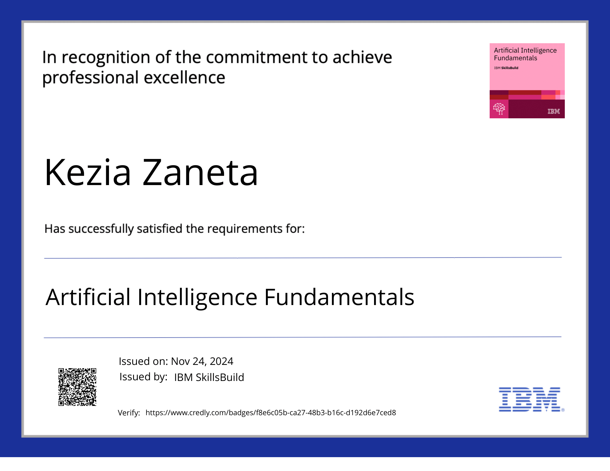
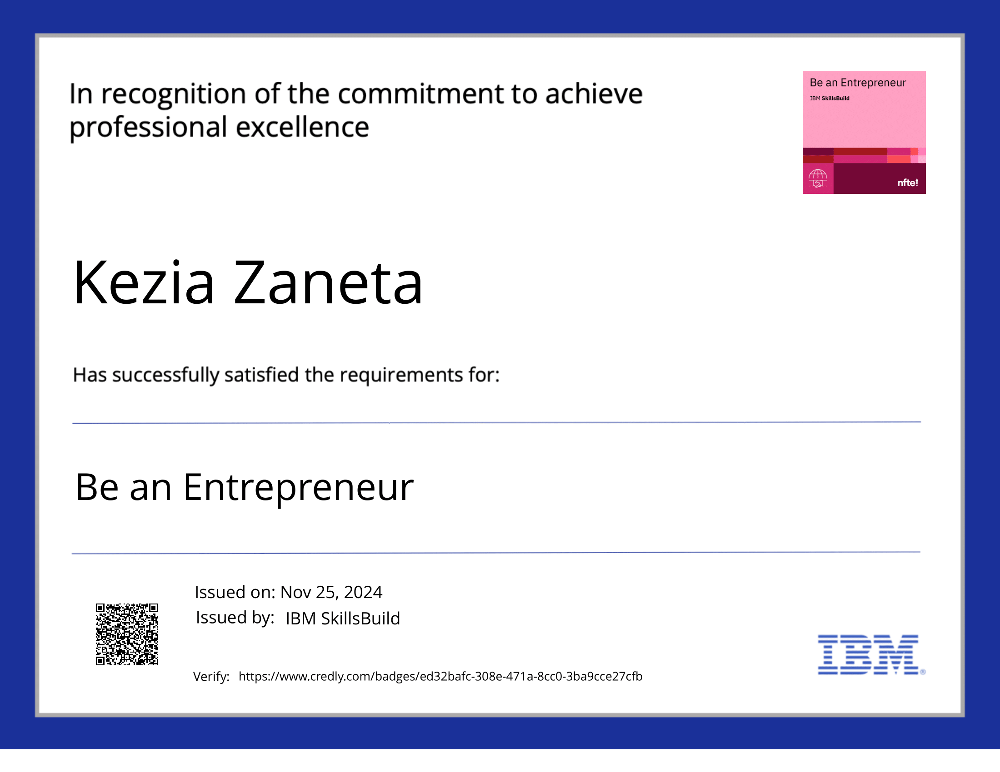
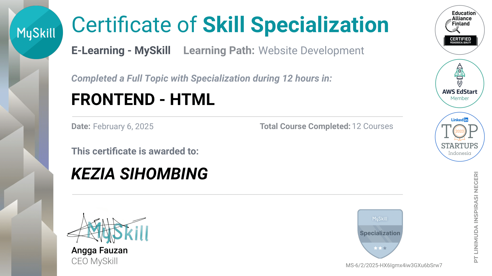
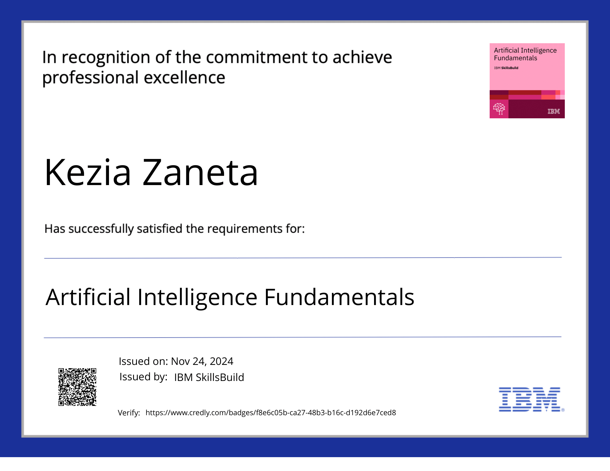
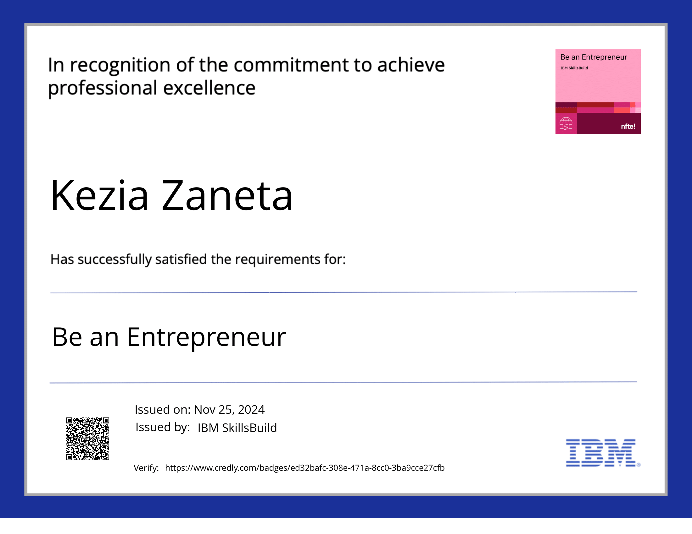
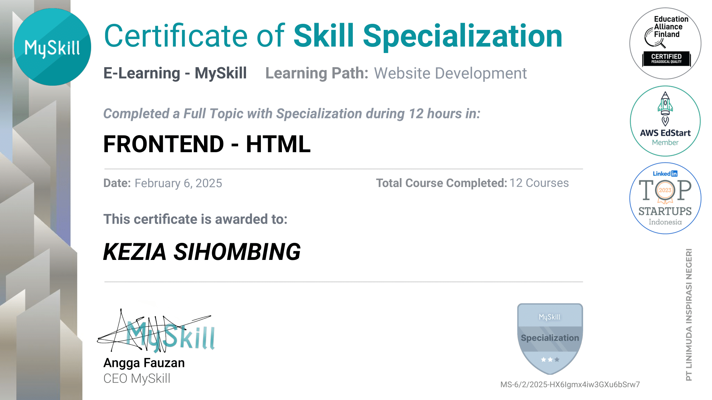

Hi there,
Nama saya Kezia Zaneta Sihombing. Saya biasa dipanggil dengan nama Kezia. Saya lahir di Pematangsiantar, 31 Januari 2006. Saya adalah mahasiswa semester empat di Universitas Brawijaya jurusan Sistem Informasi
Saya memiliki tekad yang kuat untuk terus belajar dan mengasah keterampilan saya. Saya juga memiliki keinginan yang kuat untuk memperluas relasi. Saya senang belajar hal baru dan mampu bekerja sama dalam tim
CONTACT
keziasiho31
(+62)81361484683
keziasiho
keziasihombing@student.ub.ac.id
-1.png) 




